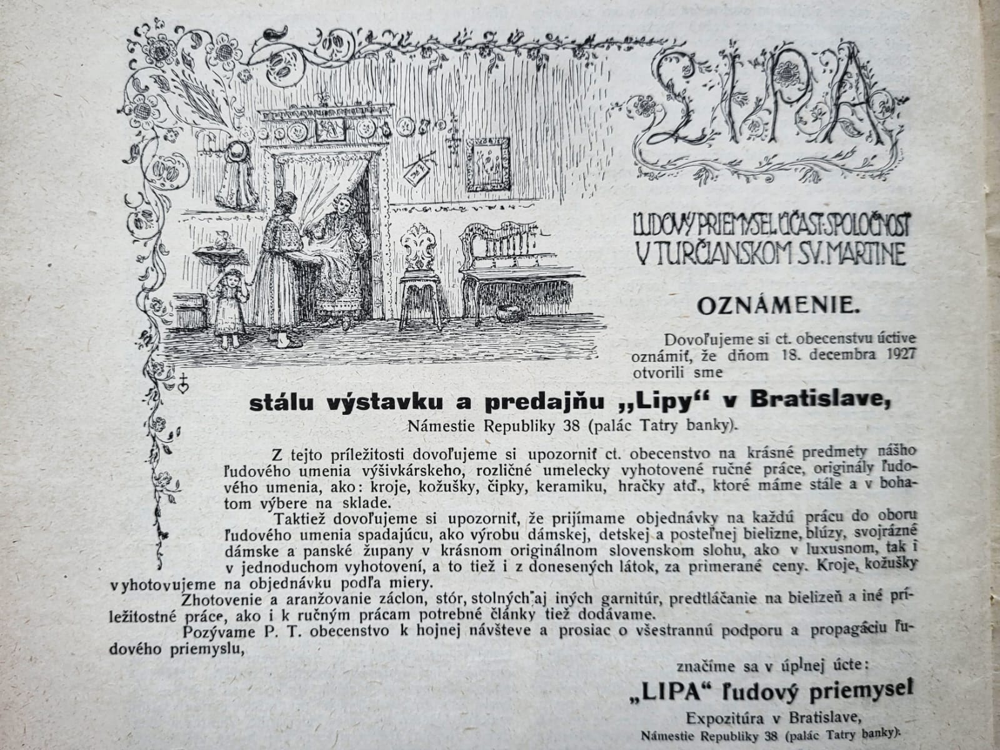
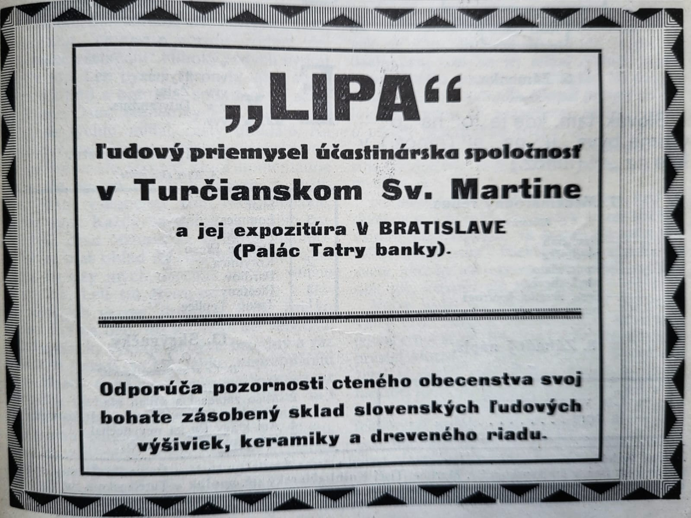
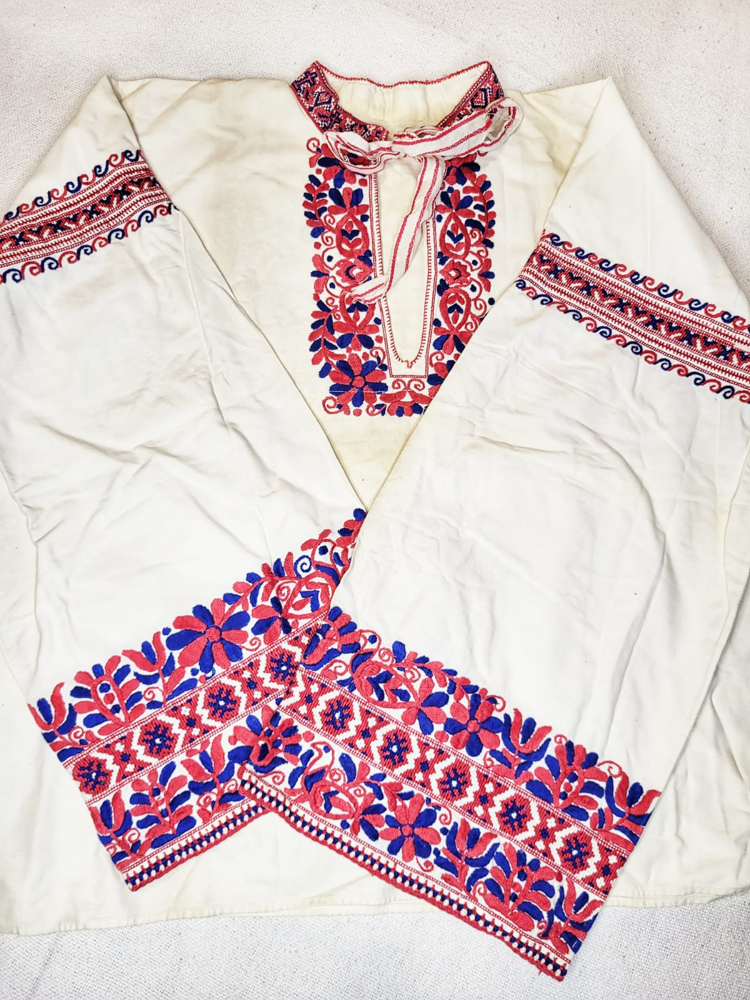
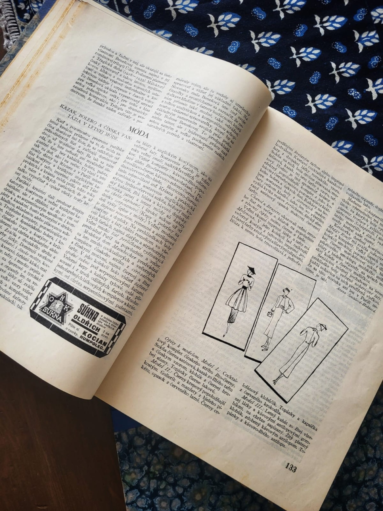
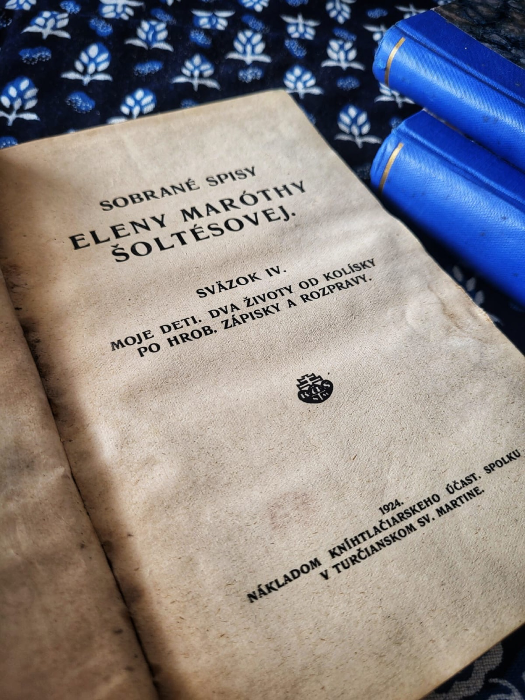

Lipa
fotografia bude doplnená
Turčiansky Svätý Martin · 1910 – 1951
Ľudový priemysel · Účastinárska spoločnosť
Strážkyňa slovenského výšivkárstva a ľudovej umeleckej výroby


Živena · ročník XVIII · 1928
Rok 1910. V Turčianskom Svätom Martine vzniká spoločnosť s nezvyčajným nápadom: predávať slovenské výšivky nie ako kuriozitu z dediny, ale ako plnohodnotný tovar so zárukou kvality a s hrdým nápisom vyrobené slovenskou ženou. Volá sa Lipa.
Za jej vznikom stojí príbeh, ktorý sa začal o dvadsať rokov skôr. Na výstave slovenských výšiviek v Martine v roku 1887 bol záujem obrovský — predaj živý, nadšenie veľké. Pavol Socháň a ďalší sa hneď pokúšali o trvalú organizáciu, no pokus za pokusom stroskotal. Správna osoba prišla až o dve desaťročia neskôr: Elena Maróthy-Šoltésová, predsedníčka spolku Živena, ktorá v roku 1909 presadila rozhodnutie o založení Lipy. Spojila kultúrne presvedčenie s fungujúcim obchodným modelom — a to sa dovtedy nikomu nepodarilo.
Od prvého dňa mali v Lipe rozhodujúce slovo ženy — vo vedení, vo výbore aj medzi akcionármi. Lipa bola zámerný ženský projekt: chránila prácu žien, šírila ich tvorbu a budovala ich hospodársku nezávislosť v čase, keď to nebolo samozrejmé.
„Išlo im hlavne o to, aby sa vzdelaný svet dozvedel, aký zaujímavý národ žije tu pod Tatrami, akým vrodeným citom pre krásu je preniknutý a ako vkusne okrášľuje si ručnou prácou šatstvo a príbytky."
— akcionárka Lipy, 1912
Vznik Lipy nebol len obchodným projektom — bol aj politickým aktom. Spolok Izabella, maďarská organizácia pôsobiaca v tom istom čase, zbierala slovenské ľudové výšivky a predávala ich do sveta ako maďarské či uhorské diela. V slovensky orientovanom prostredí to vyvolávalo silné rozhorčenie: výtvor slovenských žien bol odcudzovaný bez mena, bez pôvodu. Lipa mala byť priamou odpoveďou — predaj pod slovenskou vlajkou, s hrdým priznaním autorov.
„Celý svet musí vziať na známosť, že sú to diela naše, naše a naše, slovenské a slovenské a nie cudzie, nie hongrois, nie ungarisch a najmenej nie magyar."— Národnie noviny, č. 44, 15. 5. 1913
Prvé výrobky sa predávali už v novembri 1910. Za každodenným chodom stála Anna Šenšelová (1882 Očová – 1976 Martin) — účtovníčka-tajomníčka, ktorej Živena zaplatila štúdium v Prahe a ktorej meno je s Lipou nerozlučne späté.
Historické fotografie, reklamné materiály a vzorky z činnosti Lipy — zbierka sa postupne dopĺňa.
Lipa pokrývala takmer celé spektrum ľudovej umeleckej výroby — od výšiviek a čipiek cez krojové doplnky a bytový textil až po knihy a suveníry.

Ťažisko ponuky tvorili výšivky zo západného a stredného Slovenska — tylové práce z Bratislavskej župy, aparné výšivky z Nitrianskej župy, slatinské, detvianske a očovské vzory zo Zvolenskej župy. Nechýbali ani slovenské a paličkované čipky.

Lipa ponúkala dámske ozdoby šiat — blúzy, kimona, čepce, šály, slnečníky, zlatom vyšívané pásy. Pre deti zásterky, čepčeky, povijany a detské šaty hotové aj vystrihnuté.

Záclony, stolné garnitúry, prikrývky, koberce a ďalší bytový textil. Pre mužov drevársky a košikársky tovar, hračky a keramiku — vrátane produktov modranskej dielne.

Lipa dbala na zachovanie pôvodného ľudového kroja a jeho uplatnenie v modernej dámskej móde. Vyhotovovala svojrázne župany, blúzy a odevné kusy v originálnom slovenskom slohu.

Od roku 1913 vychádzala v Živene pravidelná módna rubrika Lipy — návrhy a prehľad o uplatnení slovenských výšiviek a čipiek v módnom oblečení.

Lipa rozšírila svoju pôsobnosť aj na vydávanie kníh — zobraných spisov slovenských spisovateľiek Vansovej, Timravy, Podjavorinskej a Šoltésovej pre odberateľov Živeny ako prémiové diela za zníženú cenu.
Lipa nebola len obchod s výšivkami. Od samého začiatku mala jasný sociálny cieľ: dať ženám na dedinách prácu a férovú odmenu za ňu.
Materiál na vyšívanie, paličkovanie a šitie putoval priamo k výrobkyniam domov. Žena na dedine mohla zarábať bez toho, aby opustila domácnosť alebo závisela od náhodného odberateľa. Výrobkyne pochádzali z Bratislavskej, Nitrianskej, Zvolenskej, Hontianskej aj Trenčianskej župy.
Nadväzovanie kontaktov s výrobkyňami a stráženie kvality malo na starosti vedenie spoločnosti — predovšetkým Anna Šenšelová, ktorá po Slovensku cestovala mesiac čo mesiac. Trvala na tradičných ľudových vzoroch a systematicky odolávala tlaku lacných módnych ornamentov. Bez tejto každodennej, nenápadnej práce by Lipa stratila svoju umeleckú integritu.
Toto nebola dobročinnosť. Bola to premyslená obchodná stratégia, ktorá mala zmysel pre obe strany — výšivačky dostávali príjem, Lipa dostávala tovar. Práve táto logika robila z Lipy niečo, čo by sme dnes nazvali sociálnym podnikaním.
Prehľad kľúčových momentov od rozhodnutia o založení roku 1909 až po vstup do likvidácie roku 1951.
Na valnom zhromaždení Živeny v Martine padlo rozhodnutie o založení akciovej spoločnosti na podporu slovenského ľudového priemyslu. V decembri vyšiel Prospekt s cieľmi: sprostredkovanie predaja výrobkov, organizovanie výroby a propagácia ľudového umenia doma aj v zahraničí.
Správkyňou sa stala Elena Maróthy-Šoltésová, účtovníčkou-tajomníčkou Anna Šenšelová, pokladníkom Fedor Jesenský. Vo vedení aj medzi akcionármi dominovali ženy. Lipa okamžite začala vyhľadávať výšivačky — prvé výrobky sa predávali ešte v novembri toho istého roku.
Výsledky prvej sezóny boli také dobré, že valné zhromaždenie schválilo zdvojnásobenie základného kapitálu. Sieť výrobcov rástla, materiál putoval priamo k ženám domov — z Bratislavskej, Nitrianskej, Zvolenskej, Hontianskej aj Trenčianskej župy.
Strieborné medaily z výstav v Košiciach aj v Miškovci. Keď sa časopis Živena dostal do finančných ťažkostí a vydavateľ uvažoval o zrušení, Lipa ho kúpila — a slovenský ženský časopis prežil.
Na výstave vo Viedni vyjadril arciknieža Leopold Salvator uznanie slovenskému ľudovému remeslu. Lipa uzavrela obchodnú dohodu s firmou z Vamberku: predávala české paličkované čipky a na oplátku šírila slovenské výšivky do Čiech.
Predaj klesol, siete výrobcov sa narušili. Napriek tomu Lipa neprerušila činnosť — a v rokoch 1916–1917 paradoxne dosiahla najvyšší obrat vo svojej histórii. Vojnový dopyt po ručných výrobkoch nečakane vzrástol.
Povojnová konjunktúra Lipe prospela — prvý a jediný raz vyplatila dividendy akcionárom. Vznikol ateliér, otvorili sa filiálky v Trenčíne a Piešťanoch. Roku 1923 vrátila Lipa časopis Živena späť spolku Živena.
Po desiatich rokoch bez akejkoľvek štátnej podpory dostala Lipa prvú subvenciu od Ministerstva školstva a národnej osvety — okrem iného na zriadenie kožušníckej školy v Mošovciach. Pravidelné príspevky sa vyplácali v rokoch 1930–1940.
Depresia a rastúca konkurencia zasiahli Lipu citeľne. Sústredila sa na predajné akcie a predvianočné bazáre po slovenských mestách. V roku 1927 otvorila stálu predajňu v budove Tatrabanky v Bratislave, ktorá fungovala do roku 1938.
Prechod frontu znamenal dočasné prerušenie činnosti. Krátko po oslobodení Lipa obnovila prácu — a fungovala ďalej až do roku 1951.
Na základe zákona o účastinných spoločnostiach vstúpila Lipa do likvidácie. Štyridsaťročná história sa uzavrela — inštitúcia, ktorá prežila dve vojny, šírila slovenské výšivky pod slovenským menom a zachovávala pôvodnosť ľudových vzorov.
„Vzory sú takmer všetky slovenské a prevedenie je také precízne, že prichádza sa diviť nad tenkosťou a grációznosťou našich slovenských výšivkárok."— z propagačného materiálu Lipy, 1911
Za Lipou nestál iba obchodný záujem. Stál za ňou kultúrny program — zachovať slovenské ľudové umenie také, aké naozaj je, a šíriť ho nie ako folklórnu raritu, ale ako živú a modernú vec.
Výšivačky mali prirodzený sklon preberať vzory z módnych časopisov. Lipa tomuto tlaku systematicky odolávala — trvala na tradičných ľudových ornamentoch, tzv. ušľachtilých pravvzoroch, a odmietala bazárové vzory obchodníkov. Bola to každodenná, nenápadná, ale zásadná práca.
Lipa si budovala reputáciu aj v zahraničí. Výrobky propagovala česká tlač a viedenský módny časopis Wiener Mode. Česko-slovenská vzájomnosť fungovala obojsmerne — slovenské výšivky do Čiech, české paličkované čipky na Slovensko.
Po roku 1918 sa pridala aj inštitucionálna ochrana. Vládny komisariát na čele s architektom Dušanom Jurkovičom dohliadal aj na problém iných spolkov, ktoré roky skupovali ľudové výrobky za babku. Ministerský pokyn z roku 1919 prikazoval županom zakročiť proti takýmto praktikám.
Lipa patrí do svojrázového hnutia — kultúrneho pohybu za moderný národný štýl — ale zároveň do reálnej hospodárskej histórie: bola to firma, ktorá platila mzdy a fungovala s výsledkami. Oboje naraz.
Zdroje: Zora Valentová — Lipa. Remeslo, umenie, dizajn, 2010, č. 3 (podľa: Ján Okrucký, Archív ÚĽUV-u, 1956). Michal Kalavský — Zborník SNM XCIV – 2000. Karol Hollý — Ženská emancipácia. Diskurz slovenského národného hnutia na prelome 19. a 20. storočia. Libuša Jaďuďová — Ľudová umelecká výroba ako súčasť kultúrneho dedičstva, 2019.
Lipa fungovala štyridsať rokov — cez dve vojny, hospodársku krízu, inflačné výkyvy a politické zvraty. Nikdy nemala ľahký život. A predsa prežila, kým zákon v roku 1951 nerozhodol za ňu.
Za jej existenciou stojí niečo jednoduchého a zároveň vzácneho: ženy, ktoré sa rozhodli, že slovenské výšivky si zaslúžia viac než podomový obchod za babku. Že sa dá predávať s hrdosťou, pod vlastným menom, za férovú cenu.
Výšivačky z Hontu, Zvolena, Nitry, Bratislavskej župy — dostávali pravidelnú mzdu. Šenšelová cestovala mesiac čo mesiac po dedinách a dbala na to, aby vzory zostali pôvodné. Živena prežila, lebo Lipa ju kúpila, keď to bolo treba. Arciknieža v Rakúsku vyjadril úctu. Módne časopisy vo Viedni recenzovali.
To všetko dohromady je Lipa. Nie múzeum — firma. Nie folklór — živá kultúra. A príbeh, ktorý sa v slovenských dejinách ešte stále nedočkal toho uznania, aké si zaslúži.